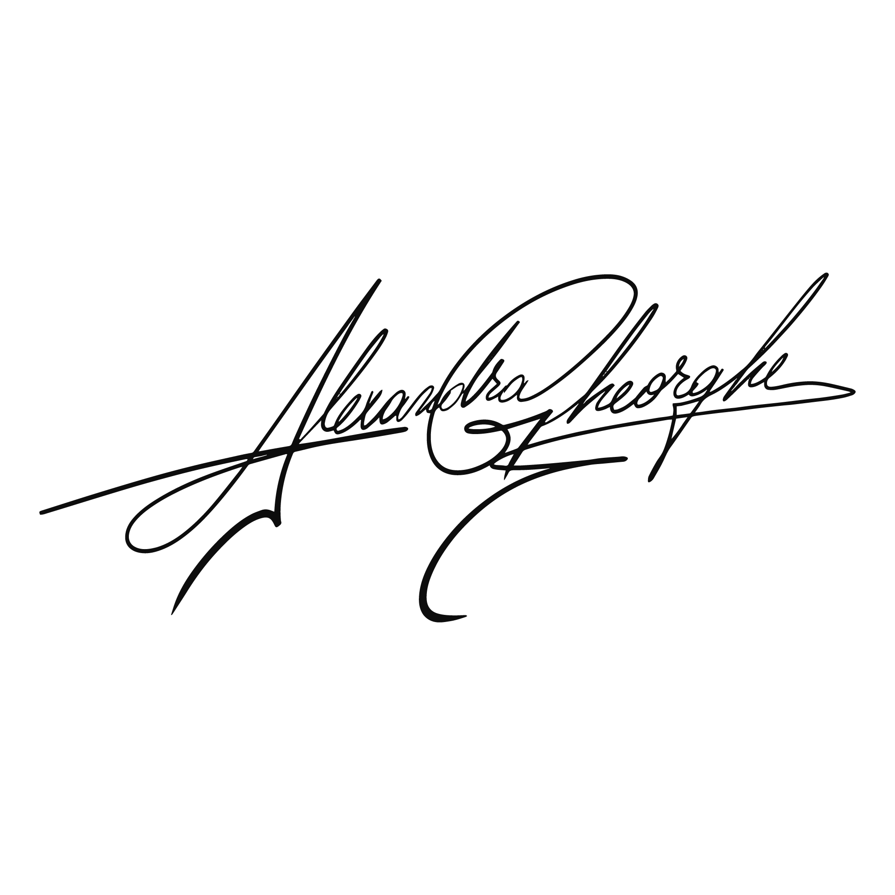

Pasul 1. Stabilim o discuție video în care vom discuta preferințele tale, vom defini funcționalitatea și traseele utilizatorilor și vom alege împreună un design de tip responsive, ceea ce înseamnă că viitorul tău site va fi optimizat atât pentru desktop, cât și pentru mobil.
Pasul 2. Vom semna un contract de servicii.
Pasul 3. Echipa noastră se va ocupa de crearea site-ului web, funcționalitate, dezvoltare front-end și back-end.
Pasul 4. Verificăm împreună cu tine varianta finală a site-ului, pentru a ne asigura că obții ceea ce iți dorești. Rămânem aproape pentru a monitoriza și a face modificări imediate.
Pasul 5. Timp de 30 de zile de la implementarea proiectului, oferim asistență totală pentru orice aspect. Verificăm calitatea și împărtășim informații pentru a asigura o tranziție fără probleme.
Îți place ceea ce vezi? Spune-ne mai multe detalii despre ceea ce ai nevoie și hai să construim împreună și site-ul tău!
Politica de confidențialitate
